3.3 Data manipulation
Data manipulation is the process of adjusting data so that it is easier to work with and more organised. Data manipulation is a crucial part of the analytical process because it allows statisticians to prepare data in a format that meets the requirements of specific analyses. The specific data manipulation needs depends on the application at hand as well as the statistical analysis that is required. Proper data manipulation enhances the interpretability of data, ensures accuracy in computations, and enables the effective application of statistical methods. Without it, raw data might obscure patterns, relationships, and insights that are vital for informed decision-making.
Data manipulation may include the following:
Removing the data that is not necessary for your analysis.
Identifying and removing rows that are duplicated.
Encoding categorical data either to or from a numerical format.
Conditional formatting in Excel.
Combining data sets.
Splitting and combining columns.
Pivot tables in Excel to reshape the data set.
3.3.1 Example: Super Animals
A few years ago, the Super Animal Cards were available at Pick n Pay stores. These collectible cards feature illustrations and fascinating facts about various animals. The aim was to spark curiosity and environmental awareness among children. Each card highlights a different animal’s unique characteristics, habitat and conservation status.
The information from these cards are collected in a data set called super-animals.xlsx.
The VLOOKUP function
The VLOOKUP function in Excel is a powerful tool to make data more descriptive and meaningful by referencing values from another table. In this example, the conservation status of animals is initially indicated with numeric values (1, 2, 3, and 4) in the dataset. To make this information more interpretable, we use a lookup table containing the corresponding descriptions for each number:
| Indicator | Description |
|---|---|
| 1 | Critically Endangered (CR) |
| 2 | Vulnerable (VU) |
| 3 | Near Threatened (NT) |
| 4 | Least Concern (LC) |
By replicating the lookup table in a separate sheet of the Excel file, the VLOOKUP function can map the numeric indicators to their corresponding descriptions. This method not only improves clarity but also allows for easier data analysis and reporting, making it a practical approach to handle coded information in datasets.
The syntax for the VLOOKUP function is:
=VLOOKUP(lookup_value, table_array, col_index_num, [range_lookup])
lookup_value: The value you want to search for in the first column of the table.table_array: The range of cells containing the table, including the column with the lookup value and the column with the return value.col_index_num: The column number (relative to the table) from which to retrieve the result.range_lookup (optional): Specifies whether the match should be exact (FALSE) or approximate (TRUE). By default, it’s approximate.
In this example, the process of using the VLOOKUP function to map descriptive conservation statuses to numeric indicators involves the following steps:
- Begin by entering the lookup table in a separate sheet within the Excel file. This table should contain the numeric indicators in one column and their corresponding descriptions in another.

- In a new column of your dataset, type the VLOOKUP formula to reference the lookup table. Ensure you use absolute cell references (with dollar signs, e.g.,
$A$1:$B$5) for the lookup table range. This prevents the table reference from shifting when you drag the formula down to apply it to other rows.

Conditional formatting
Conditional formatting is a tool in Excel that allows users to automatically apply formatting to certain cells based on specified criteria. The formatting can be colours, icons, or many others. You can create rules based on predefined options or custom formulas.
In the example of the Super Animal Cards, conditional formatting can be used to highlight the top 10 animals with the highest weights. This is particularly useful for quickly identifying the heaviest animals in the data set. To achieve this in Excel:
- Select the column containing the weight data.
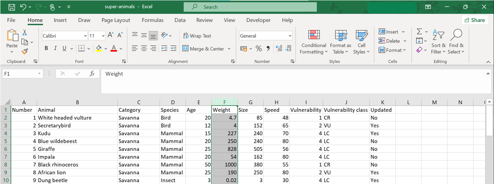
- Navigate to the Home tab, click on Conditional Formatting and choose New Rule.

- In the New Formatting Rule dialog box, select Format only top or bottom ranked values. This allows you to target the top 10 entries in the dataset.

- Specify the formatting style, such as a bold font or a shaded cell color, to visually emphasise the top 10 entries.

Numerical calculations in Excel
Excel can also perform basic numerical calculations, such as addition, subtraction, multiplication, and division. These operations can be executed directly in cells using simple formulas:
Addition:
= A1 + B1adds the values in cells A1 and B1.Subtraction:
= A1 - B1subtracts the value in cell B1 from the value in cell A1.Multiplication:
= A1 * B1multiplies the values in cells A1 and B1.Division:
= A1 / B1divides the value in cell A1 by the value in cell B1.
These formulas can also combine multiple operations using parentheses for clarity and order of precedence. For example, = (A1 + B1) * C1 first adds the values in cells A1 and B1, then multiplies the result by the value in cell C1.
In the example of the Super Animal Cards, we can convert the speed from kilometers per hour to miles per hour by multiplying the values in column H with 0.621371.
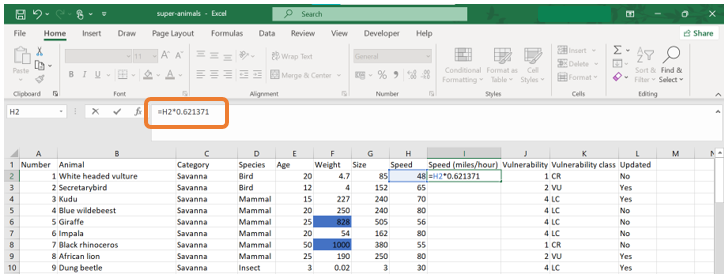
Constructing crosstabulations
The PivotTable tool in Excel is a powerful feature for constructing crosstabulations involving two or more variables. In this example, we will consider two cases:
When both variables are categorical.
When one variable is categorical and the other is numerical.
- Case 1: Create a crosstabulation of the species and the category of the super animal card.
- Navigate to the Insert tab and select PivotTable. 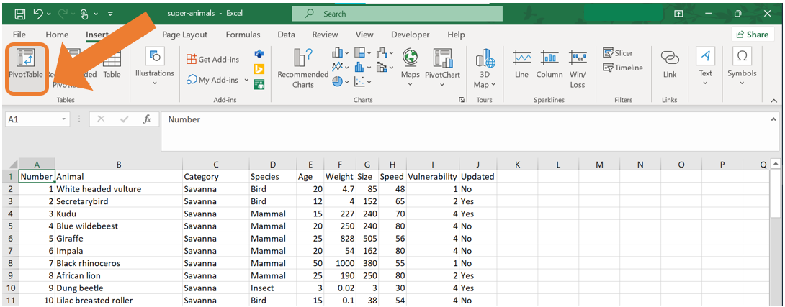
- The Create PivotTable wizard will appear, where you can review the data range that is automatically detected and choose where the PivotTable will be created. For this example, select New Worksheet. Click OK.

- A new worksheet will open up with the PivotTable Fields on the right.

- Using the PivotTable Fields menu, the Pivot Table can be set up. Drag the column headings to their desired positions. Drag “Category” to the Rows area. Drag “Species” to the Columns area. Drag “Animal” to the Values area to count the number of animals in each category.

Case 2: Create a crosstabulation of the Species and the Size of the animal.
Create the Pivot Table as in steps 1 and 2 above.
Drag the column headings to their desired positions. Drag “Species” to the Rows area. Drag “Size” to the Columns area. Drag “Animal” to the Values area.
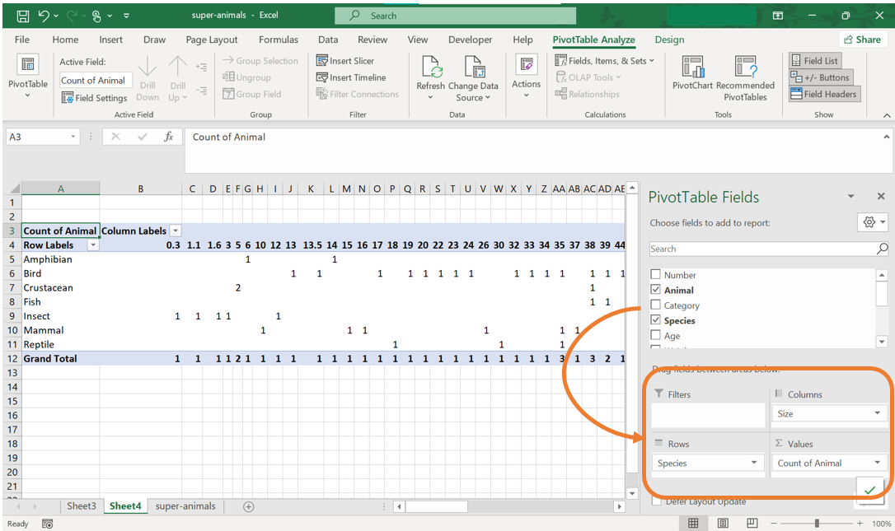
- Since “Size” is a numerical variable, it must be grouped into ranges. This can be done by selecting the cell with the first value of the “Size” variable, right-click and select Group from the menu.

- In the Grouping window, specify the desired range settings.
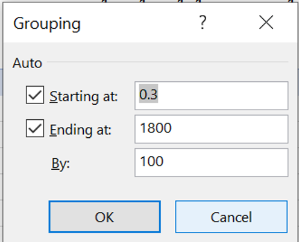
- The PivotTable will now display a neater and more interpretable corsstabulation for species by grouped sizes.

3.3.2 Example: Employees
You are employed as a data analyst for a company and have been provided with a data set containing details about employees and the projects they are working on.

In this example, we will illustrate how to:
Combine two columns in Excel into one.
Splitting one column into two columns.
Combining columns
To combine the information of two columns into one, we will make use of the CONCAT function. This function is used in Excel to join, or concatenate, two or more text strings into a single string. In this example, we will join the name and the surname of the employees into a single column. The syntax for the CONCAT function is:
=CONCAT(text1, [text2], ...)
where text1, text2,... are text strings, cell references or ranges to be combined separated by commas. It is important to note that the CONCAT function does not automatically add any deliminators such as spaces or commas between the text strings. This must be explicitly added as part of the list of arguments.
For this example, if we want to combine the text in the “emp_name” and “emp_surname” variables, the following steps can be followed:
- Insert an empty column where the combined variable will be placed. To do this, select the column where the new column should appear before, right-click and select Insert from the menu. This will create an empty column which you can name “emp_name_surname”.

- In the first cell of the new column, use the
CONCATfunction to combine the name of the employee (in column B) with their surname (in column C). Remember to add a space between the name and the surname!
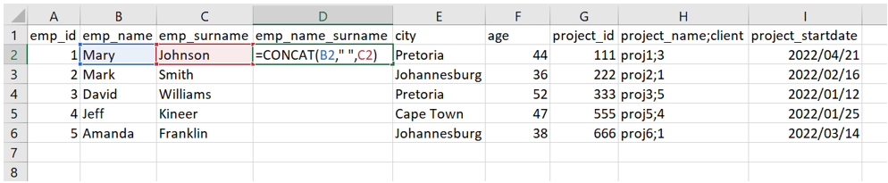
- The result of the
CONCATfunction is as follows:

- Copy the formula down the rest of the columns to combine the names and the surnames for all the employees in the data set.
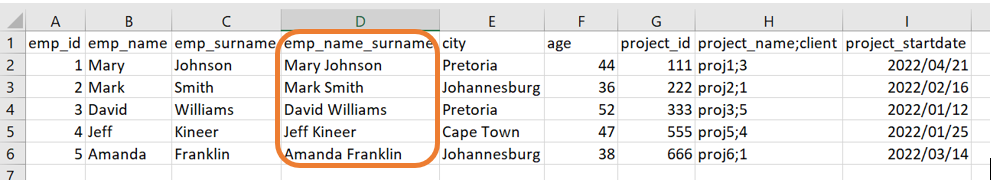
Splitting columns
To split columns in Excel, the Text to Columns functionality can be used. This functionality is used to split data in a single column into multiple columns based on either a specific deliminator or a fixed width. This is particular useful when the combined data needs to be separated into distinct fields for easier analysis or formatting.
For this example, the project name and the client name are displayed in a single column, separated by a semicolon (;). To split them into two columns, follow these steps:
- Again, add an empty column next to the column which requires splitting. Then, select the column with the combined information. Navigate to the Data tab and select Text to columns.
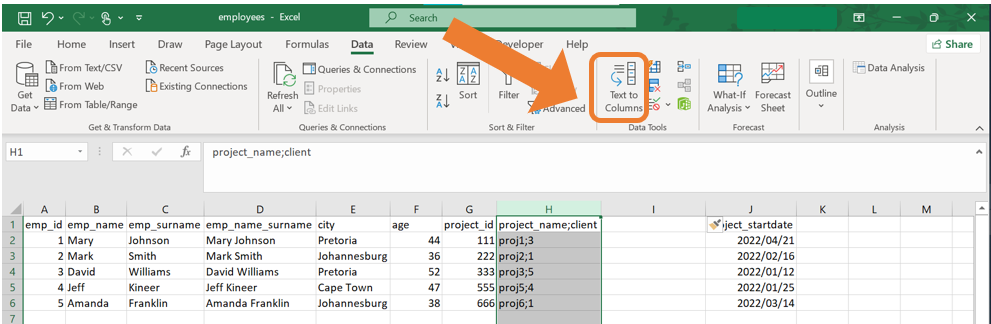
- The Convert Text to Columns Wizard will open. In this case, the data is “Delimited” because the information is separated with a semicolon. This is often automatically detected. Click Next.
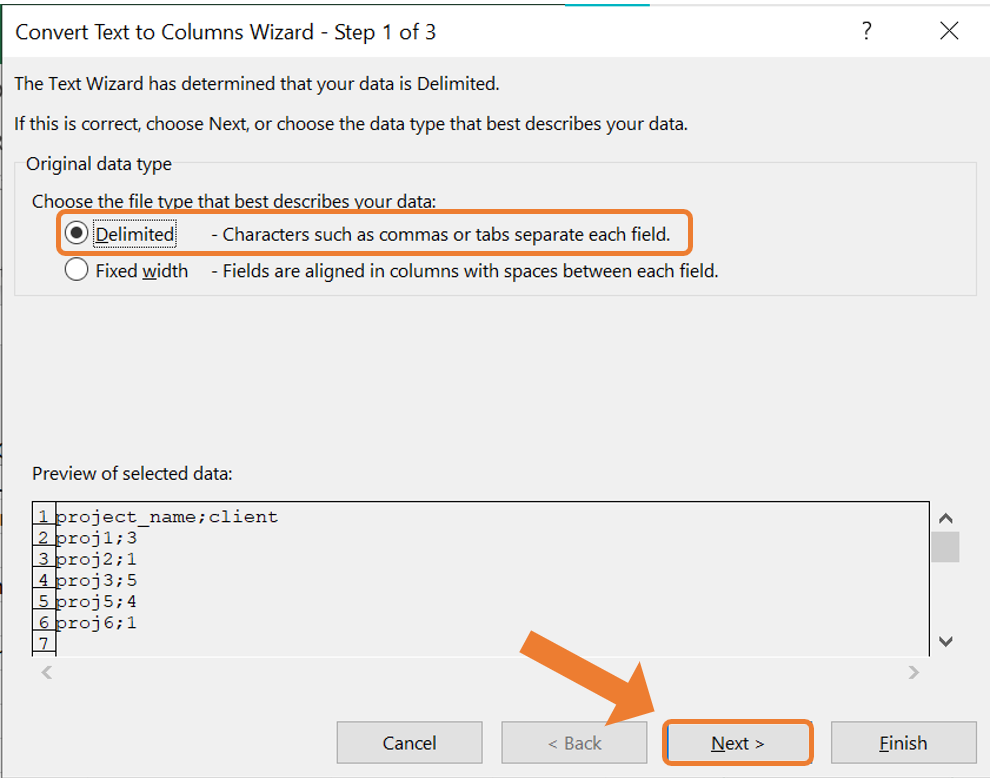
- In the next step, select the appropriate deliminator, in this case, “semicolon”. You can preview the split data in the “Data Preview” section to confirm the results. Click Next.
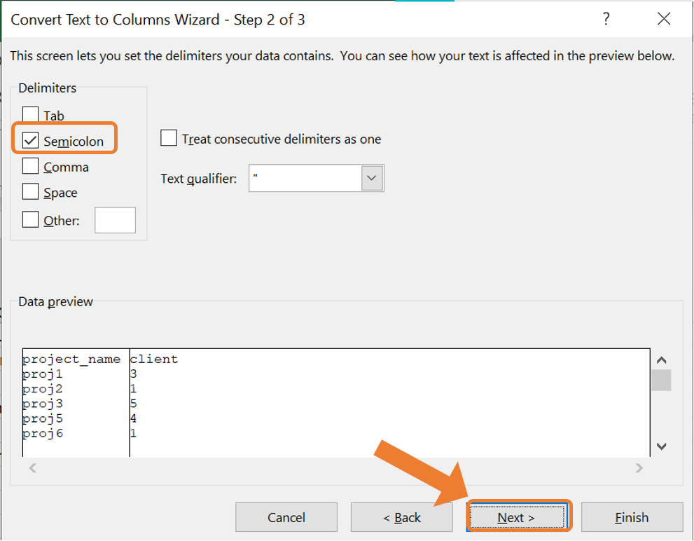
- In the final step, choose the data format for each column. For this example, you can keep the default settings. Click Finish.
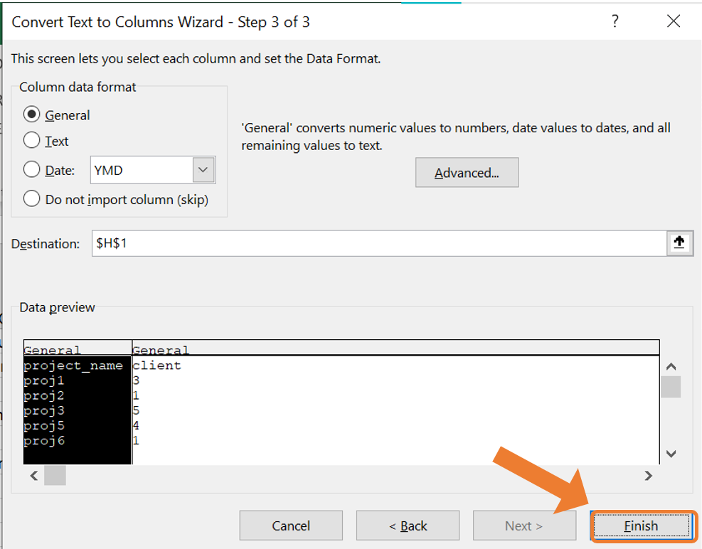
- To combined data will now be split into two separate columns: one for the project name and one for the client name.
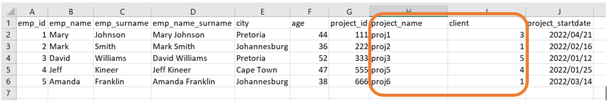
3.3.3 Basic Excel functions
Excel has many built-in functions that can assist in doing more numerical calculations, creating new variables in a data set as well as summarising data.
Summation
The SUM function can be used to calculate the total of a range of numbers. The syntax for the SUM function is:
=SUM(number1, number2, ...) or =SUM(range)
For example, SUM(A1:A10) will return the sum of all the numbers in cells A1 to A10.
Averaging
The arithmetic mean of a range of values can be calculated with the AVERAGE function. The syntax for the AVERAGE function is:
=AVERAGE(number1, number2, ...) or =AVERAGE(range)
For example, AVERAGE(A1:A10) will return the average of all the numbers in cells A1 to A10.
Counting
Counting functions can be useful for analysis the structure of the data set. Here we will consider three counting functions popularly used in Excel:
- The
COUNTfunction counts the number of cells containing a numerical value. The syntax for theCOUNTfunction is:
=COUNT(value1, value2, ...) or =COUNT(range)
For example, COUNT(A1:A10) will return the number of cells containing a numerical value in cells A1 to A10.
- The
COUNTAfunction counts the number of non-empty cells. The cells can contain numerical values, text or values from any other data type. The syntax for theCOUNTAfunction is:
=COUNTA(value1, value2, ...) or =COUNTA(range)
For example, COUNTA(A1:A10) will return the number of non-empty cells in the range A1 to A10.
- The
COUNTBLANKfunction counts the number of empty cells. The syntax for theCOUNTBLANKfunction is:
=COUNTBLANK(value1, value2, ...) or =COUNTBLANK(range)
For example, COUNTBLANK(A1:A10) will return the number of empty cells in the range A1 to A10.
Minimum and maximum values
The MIN and MAX functions can be used to identify the smallest and the largest value in a range. The syntax for the MIN and the MAX functions is:
=MIN(number1, number2, ...)or=MIN(range)=MAX(number1, number2, ...)or=MAX(range)
For example, MIN(A1:A10) will return the smallest value in the range A1 to A10 and MAX(A1:A10) will return the largest value in the range A1 to A10.
IF function
The IF function performs a logical test and returns one value if the condition is true and another value if the condition is false. The syntax for the IF function is:
=IF(logical_test, value_if_true, value_if_false)
logical_test: Any value or expression that can be evaluated to TRUE or FALSE.value_if_true: The value that is returned iflogical_testis TRUE.value_if_false: The value that is returned iflogical_testis FALSE.
For example, =IF(A1>50, "Pass", "Fail") will return “Pass” if the value in cell A1 is greater than 50; otherwise it will return “Fail”.
Countif function
The number of cells than meet a certain condition can be counted with the COUNTIF function. The syntax for the COUNTIF function is:
COUNTIF(range, criteria)
range: The range of cells from which you want to count non-empty cells.criteria: The condition in the form of a number, expression or text that defines which cells will be counted.
For example, =COUNTIF(A1:A10, ">10") will count all the cells from A1 to A10 which contains a numerical value greater than 10.
Sumif function
The SUMIF function is used to sum the values in a range that meets a specified criteria. The syntax for the SUMIF function is:
=SUMIF(range, criteria, [sum_range])
range: The range of cells you want to evaluate.criteria: The condition or criteria in the form of a number, expression or text that defines which cells will be added.sum_range(optional): The actual cells to sum. If this argument is not specified, the cells inrangewill be used.
For example, suppose you have a data set with two columns, where column A contains the product category and column B contains the number of sales.
- To sum the sales for “Electronics”, you can use the formula:
=SUMIF(A1:A10, "Electronics", B1:B10)
where Excel will look for the word “Electronics” in the range A1 to A10 and the corresponding sales values in B1 to B10 will be summed.
- To sum all the sale values greater than 500, you can use the formula:
=SUMIF(B1:B10, ">500")
where Excel will sum all the sales values greater than 500 in the range B1 to B10.
Absolute cell referencing
In Excel, you can use absolute cell referencing to ensure that the formula keeps referencing to the same cell or range of cells regardless or where the formula is copied or moved. The syntax for absolute cell referencing is: $Column$Row. For example, $A$1 refers to cell A1 and this reference will not change regardless of where the formula is copied in the Excel sheet.
Absolute cell referencing is useful in scenarios where you need to repeatedly reference the same cell or range of cells. Common examples include:
Using a constant value: When applying a discount stored in a specific cell across multiple calculations.
Referencing a total: Referring to a grand total cell in calculations.
3.3.4 Exercises
Describe a scenario where you might use the Text to Columns functionality in Excel.
Explain the difference between using a delimiter and using fixed width in the Text to Columns tool. Provide examples for each.
What is the difference between
COUNT,COUNTA, andCOUNTBLANKfunctions? Provide an example for each.You are analysing sales data, and the column containing the product names has been combined with the client names, separated by a comma. Describe how you would use Excel to split this column into two separate columns.
Explain how the
CONCATfunction can be used to combine data from two columns. Provide an example of when this might be useful.Explain the importance of absolute cell referencing in Excel. Provide an example of when it would be necessary.
Describe a situation where combining data from two separate columns would be helpful for analysis. Which function in Excel would you use, and why?